STC
Selfcare App, Website & Kiosk
A redesign of STC’s digital self-care ecosystem, bringing the mobile app, the customer website and in-store kiosks together into one consistent experience.
Working with three studios across India and Italy, I translated STC’s refreshed brand into a design language that could grow with its customer base.
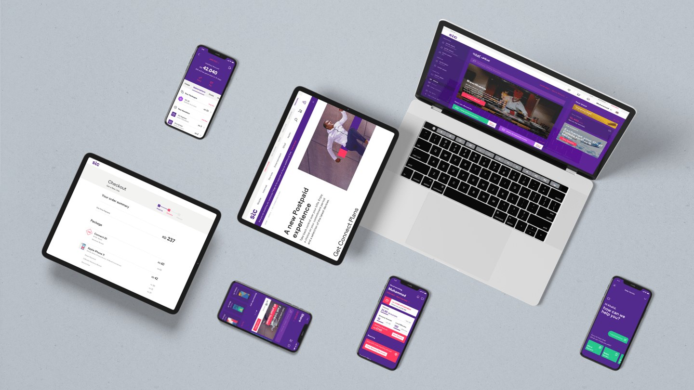
Background
STC is a Kuwait-based telecommunications company with a rapidly growing customer base. Its customers manage their accounts through a mobile app, a website and kiosks, and the experience needed to feel the same, and just as easy, in all three places.
With a refreshed brand identity on the way, STC wanted a world-class customer experience across those touchpoints. The objective was shaped by eight themes, such as providing meaningful suggestions, supporting the customer’s family, a structured overview of spending and a single place for customer support.
The goal was a seamless, scalable experience held together by one design language, flexible enough to grow with the brand.
How might we create one self-care experience that feels seamless on the app, the web and the kiosk?
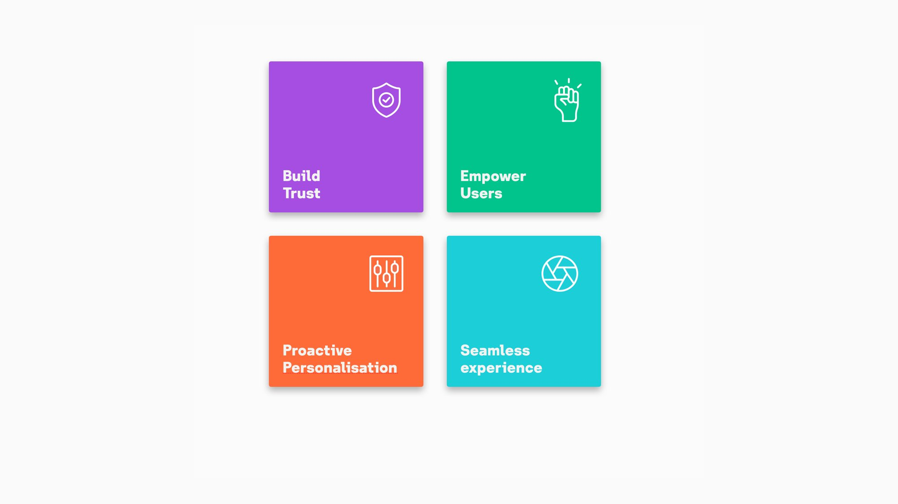
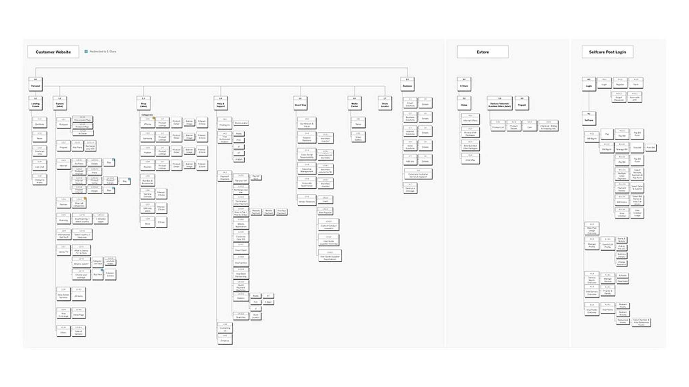
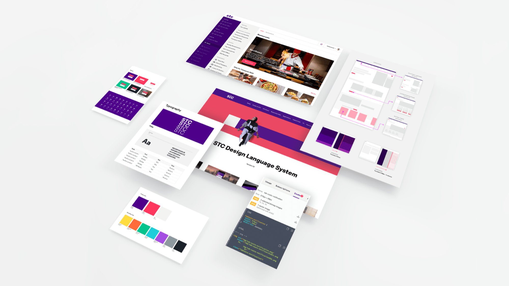
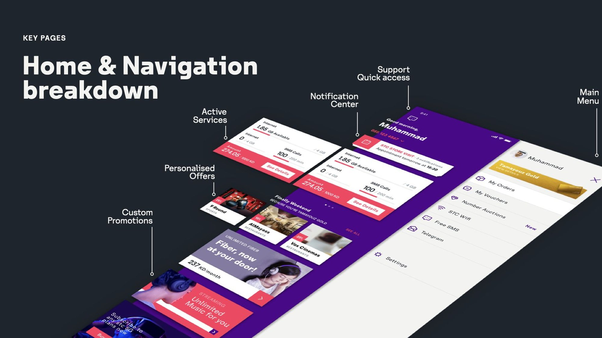
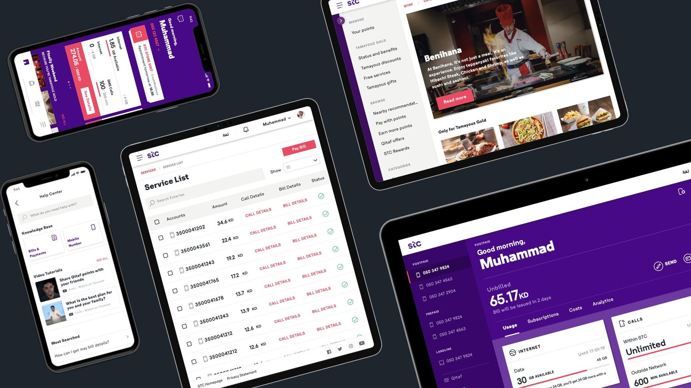
Process
Foundation and design language. Starting from the new branding by Interbrand, I evolved the design language on the new home dashboard, setting foundational rules for grids, type and colour while building responsive components. I tested visual concepts on the wireframes and improved the components as we moved into design sprints.
Self-care and website. For self-care, I took on user stories, mapping the flows, validating them with the client and adapting the designs for the web. For the customer website, we identified unique templates through the information architecture, and I covered more than 10 key templates, including the product detail page and its responsive breakpoints.
Kiosk. I created the illustrations for the kiosk’s instruction animations, tracing the components from the machines and following STC’s illustration style. Working with the animator to bring them to life, they guide customers to the right slot and through each step.
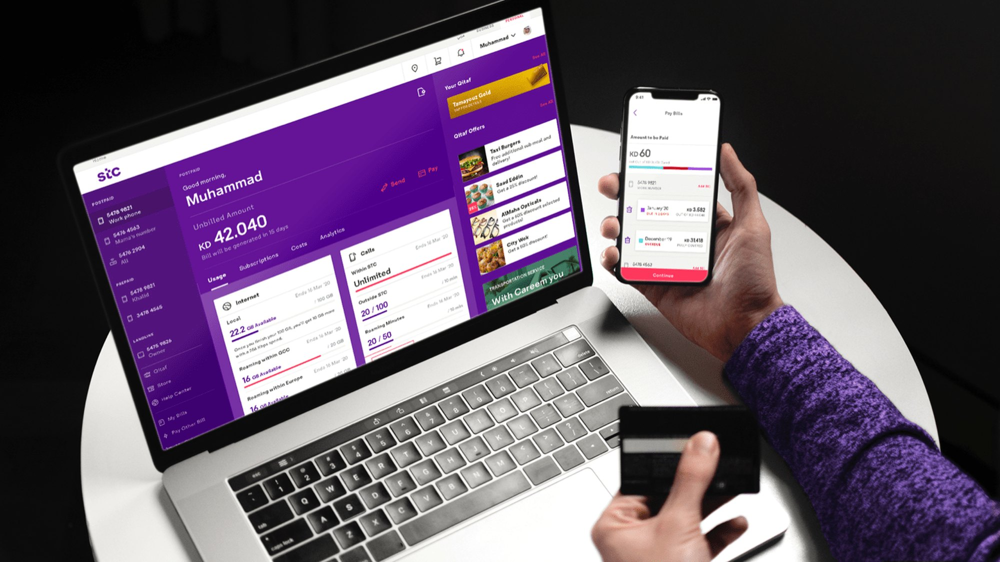
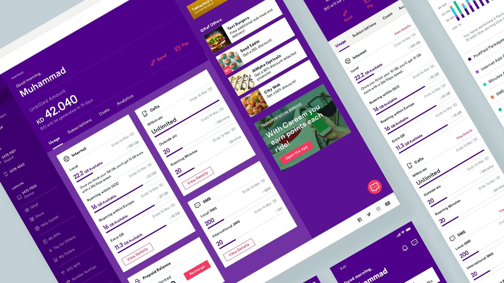
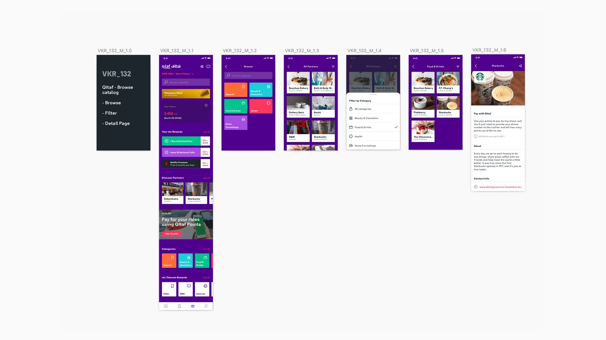
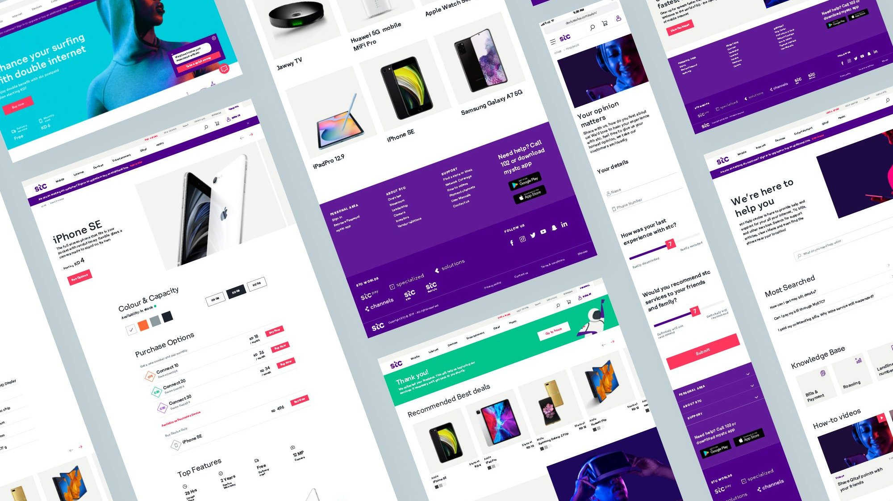
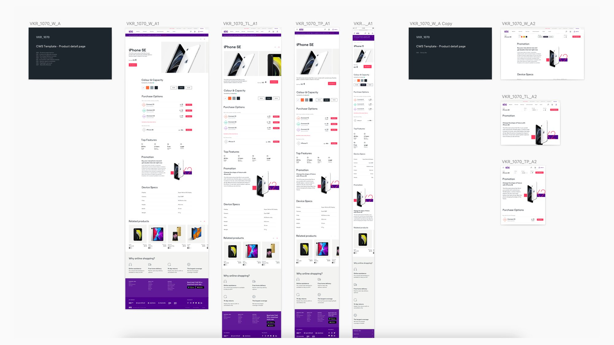
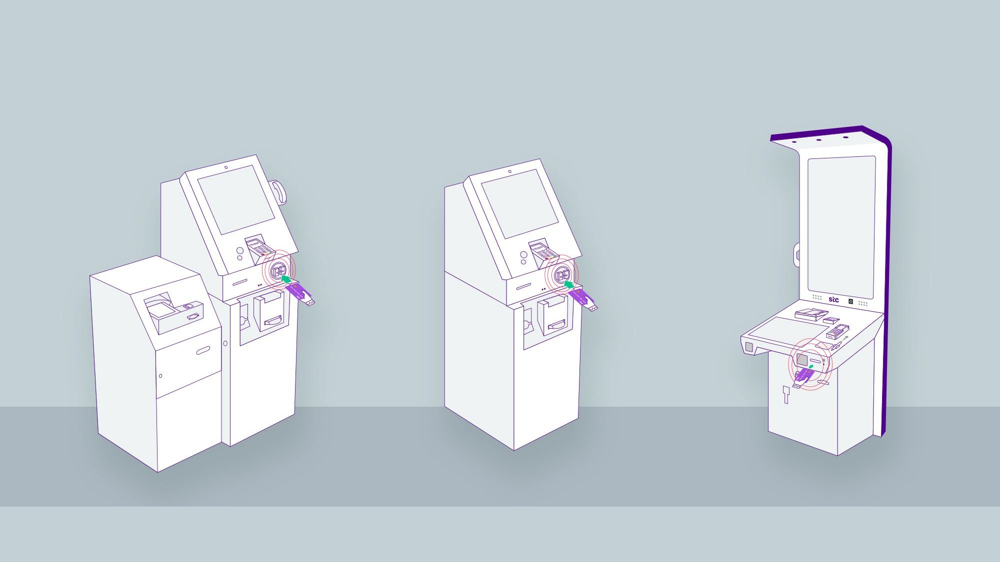
Before and after
One of the most challenging templates was the product detail page. I reimagined its overall look and made it easier to use, from choosing a device to comparing purchase options.
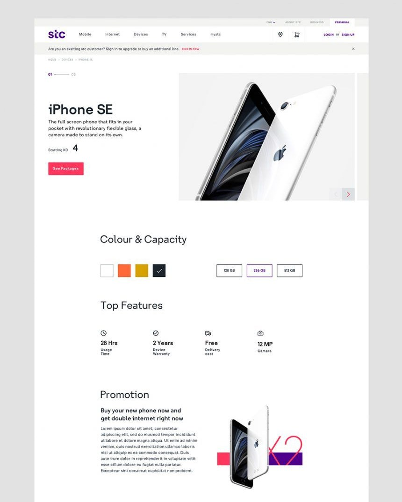
After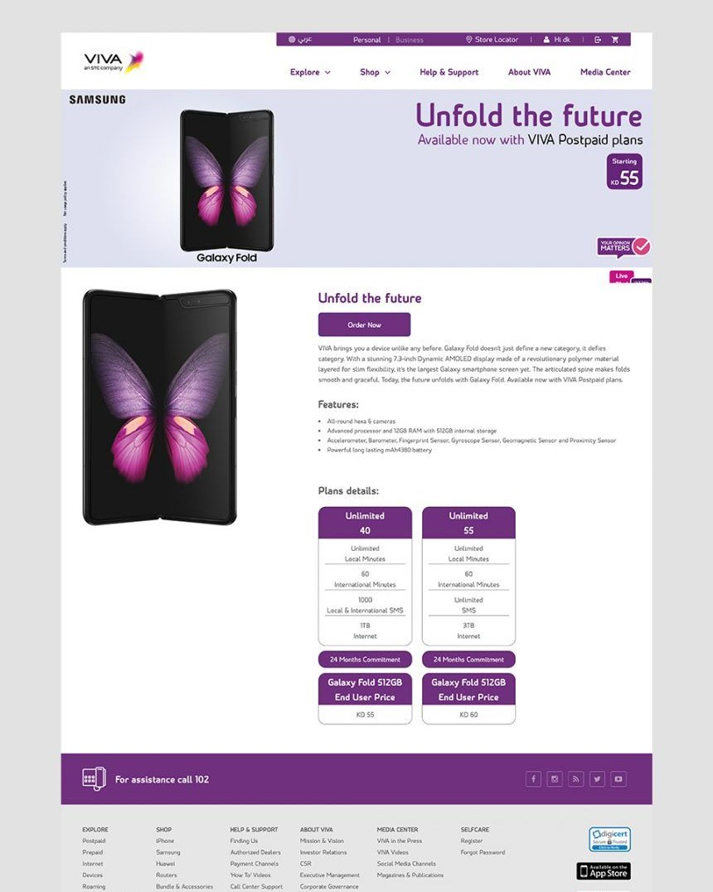
BeforeResults
The result is a unified, scalable self-care ecosystem across app, website and kiosk. The project was well received in the Middle East and was awarded for Digital Transformation.
The new design language improved consistency, usability and flexibility across every touchpoint, with clearer navigation and journeys that carry over from one to the next. A refined homepage and navigation structure make it easier for customers to find what they need.
Looking back, collaboration was key. Even across different cities and time zones, we found a good system for reviews and feedback, and locking the illustrations before animating them saved us several rounds of iteration.